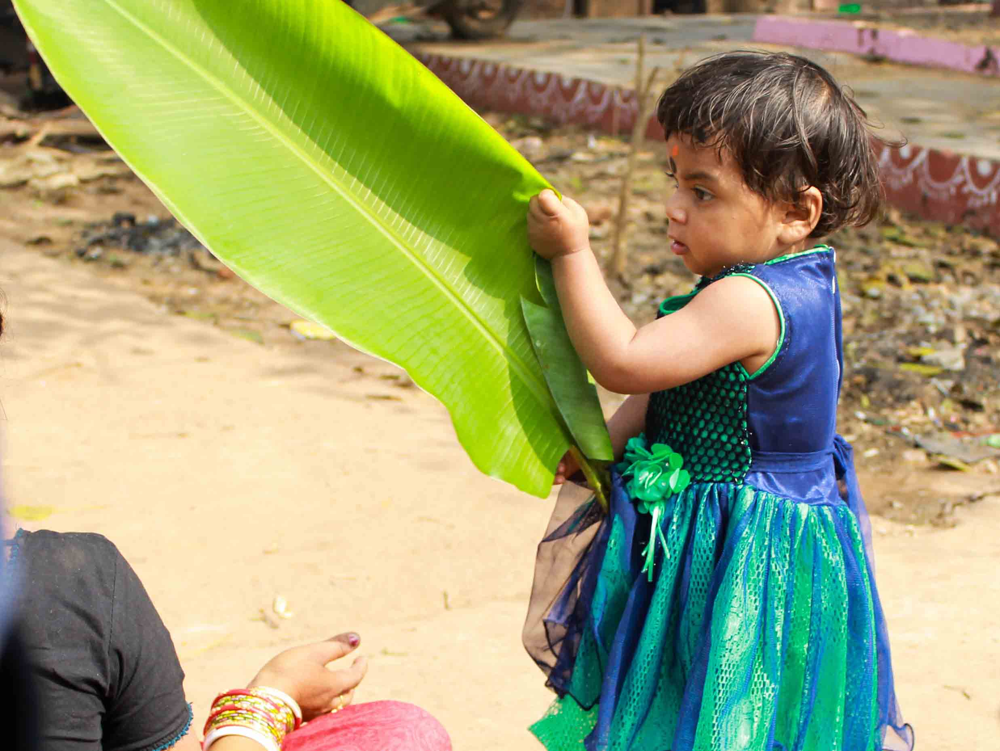
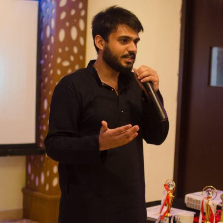
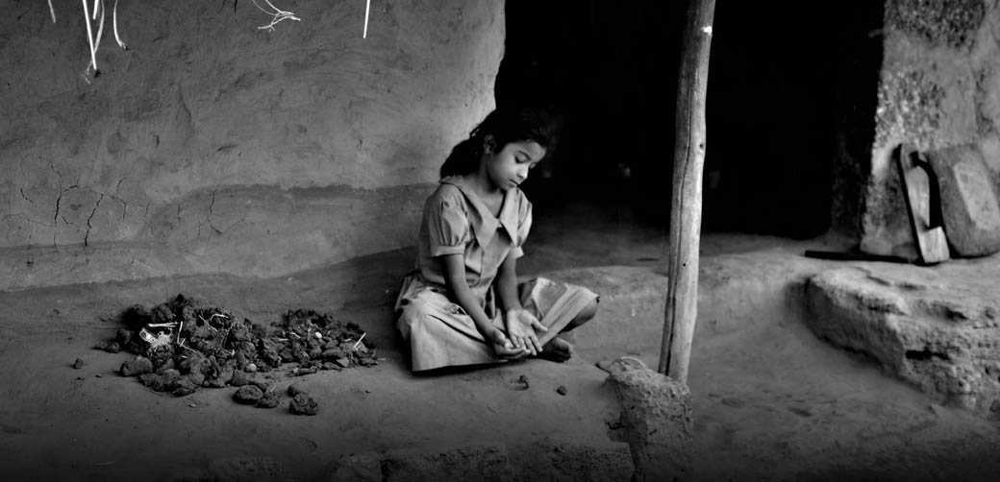
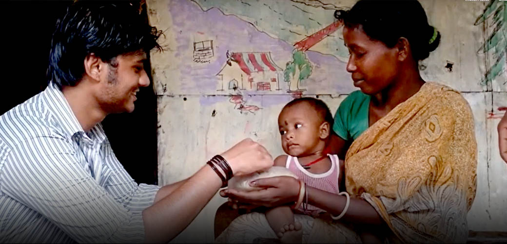

Originally initiated in Hyderabad, Desire took part in the Rice Bucket Challenge on 29th August 2014, donating 61 Kgs of rice to 61 families. Back then, Ice bucket challenge was trending and the concept was an extension of it and was more inclined towards spreading happiness to the underprivileged. Further, we nominated KAASH, NSS, Parivartan, and RON. It was a bright-eyed initiative that addressed the issue ‘absence of proper food for the deprived section of our community’. Such initiatives might bring a significant change in their nutritional requirements. It was a small but significant step towards providing a better lifestyle to the one who needs it. This challenge not only spread a trend but also created a meaningful and impactful revolution that was driven by fun and the spirit to uplift the nutritional situation of the people belonging to the backward section of the society. We are proud to be a part of this revolution and hope to come up with such innovations in the future as well. We hope this inspires all our kind viewers to step up and move forward with this trend, only then we can revolutionize it on a much larger and sustainable scale. We are also open and ready to take up any such profound and far-sighted challenges that you might suggest us. So, widen your imaginative, compassionate as well as philanthropic side and suggest away by reaching out to us. There is a social change-maker inside each of us, we just need to find it!
Rice bucket challenge was my first project in Desire.
During those days , Ice bucket challenge was trending. Although it started with a great cause, but the challenge lost its value with time.
We picked up a idea from Hyderabad and donates 60 kgs of rice in a small slum near our college as a part of Rice bucket challenge.
I still remember it was raining heavily, but irrespective of the adverse condition the zeal of Desire members made me fall for this organisation.
The love and humility of Desire members is the driving force for the great work they carry out.
Md. Asif, Alumni

As I remember Rice Bucket Challenge, I realise it was an innocent poke to the then present to test the true nature of reality. It was the nascent stage of an idea, that later grew big and ferocious and chased us to the sixth year of an organisation. It was a spark that we did follow without knowing the full impact . On the end of the event we did learn a lot, not through words but thorough the needy stares and shaking hands accepting whatever was on offer.
One of our talented member successfully mimicked "ice bucket challenge" and named the event as "rice bucket event". Though we didn't bath in rice rather we ended up donating packets of rice to eight to ten households in a nearby slum on an fine evening. We were amazed to see that people of this slum accepted food from total strangers without doubt. It was not much. Now, when I look back, I understand ahaar in a way shaped the image of a left out world that got oppressed under the wheels of civilization. We were aware by then about this world but to experience it, even for a shot time, was a totally different learning. This event had laid down the very road of our journey. After we came back we realised giving packets of rice, which was not even enough for an one time meal for a family of four or five is never a long lasting solution. So we thought of arming people with the very weapon by which they would fight their way back to light, and we could not think of anything better than education. After six years of brainstorming and hard work by our extremely talented teams, we know understand we still have miles to go. But on our every upcoming steps, the impact of the project will be sincerely remembered and acknowledged.
Sayan Bhattacharya, Social Changemaker

Rice Bucket Challenge
Are we making the perfect world for the kids?

Rice Bucket Challenge
This is what we live for - to see the pure joy in the faces
Previous
Next
-Buddha